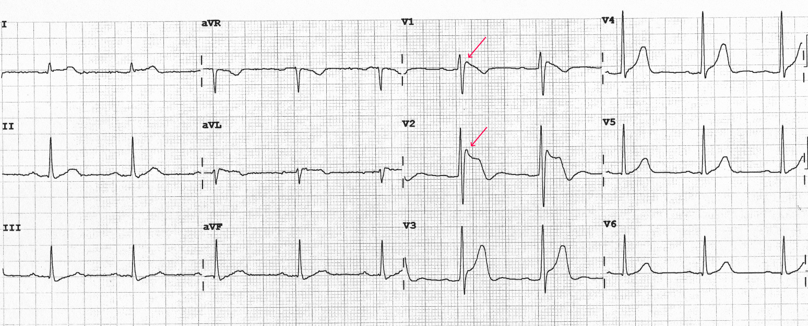

BRUGADA
Right ventricular variant of J wave syndrome.
The region most affected by the disease is the anterior right ventricular outflow tract(RVOT). The patients display J- point and ST-segment elevation in the right precordial leads.
The region most affected by the disease is the anterior right ventricular outflow tract(RVOT). The patients display J- point and ST-segment elevation in the right precordial leads.

EARLY REPOLARIZATION
Distinct J-wave or J-point elevation, notch, or slur of the terminal part of the QRS, and
ST-segment elevation in the lateral (type I), infero-lateral (type II), or
infero-lateral plus anterior or right ventricular leads (type III).